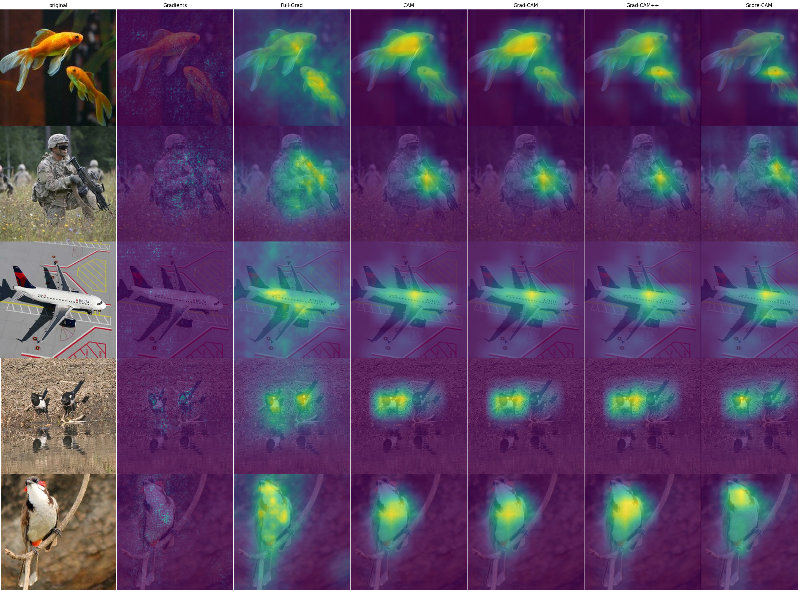

keras Explainable¶
Efficient explaining AI algorithms for Keras models.
Installation¶
pip install tensorflow
pip install git+https://github.com/lucasdavid/keras-explainable.git
Usage¶
This example illustrate how to explain predictions of a Convolutional Neural Network (CNN) using Grad-CAM. This can be easily achieved with the following example:
import keras_explainable as ke
model = tf.keras.applications.ResNet50V2(...)
model = ke.inspection.expose(model)
scores, cams = ke.gradcam(model, x, y, batch_size=32)
Implemented Explaining Methods¶
Method |
Kind |
Description |
Reference |
|---|---|---|---|
Gradient Back-propagation |
gradient |
Computes the gradient of the output activation unit being explained with respect to each unit in the input signal. |
|
Full-Gradient |
gradient |
Adds the individual contributions of each bias factor in the model to the extracted gradient, forming the “full gradient” representation. |
|
CAM |
CAM |
Creates class-specific maps by linearly combining the activation maps advent from the last convolutional layer, scaled by their contributions to the unit of interest. |
|
Grad-CAM |
CAM |
Linear combination of activation maps, weighted by the gradient of the output unit with respect to the maps themselves. |
|
Grad-CAM++ |
CAM |
Weights pixels in the activation maps in order to counterbalance, resulting in similar activation intensity over multiple instances of objects. |
|
Score-CAM |
CAM |
Combines activation maps considering their contribution towards activation, when used to mask Activation maps are used to mask the input signal, which is feed-forwarded and activation intensity is computed for the new . Maps are combined weighted by their relative activation retention. |
|
SmoothGrad |
Meta |
Consecutive applications of an AI explaining method, adding Gaussian noise to the input signal each time. |
|
TTA |
Meta |
Consecutive applications of an AI explaining method, applying augmentation to the input signal each time. |